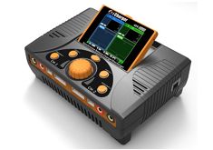
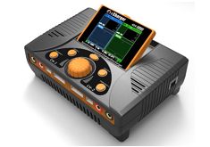

iCharger 106B, iCharger 206B, iCharger 208B, iCharger 306B, iCharger 3010B - battery charger


There is no device dialog for the iChargers which are serial connected.
It is only required to establish the serial connection and it will start the live data gathering or start reading data from the device.
Hint: The used Baud rate of 128000 Baud can not be opened if a UNIX derived operating system is used, e.g. Linux or MAC OS X.
This data rate doesn't have an even divisor. Linux user will have the opportunity to modify the kernel module source.
Hints how to do that can be found in the Internet.
iCharger X6, S6, X8, X12, 406DUO, 308DUO, 4010DUO, DX6, DX8 - battery charger
 

To gather live data USB connection must be established.
Check USB HID is detected and configured successful.
UNIX derived operating systems may need configuration of udev rules or kernel extensions.
While selecting an iCharger with USB at device selection dialog more info get displayed.
The implementation allows, while device has micro SD-card inserted, to import stored execution logs directly.
Use menu or "Ctrl+I".
A file selection dialog gets opened and enable file selection for import.
Requirement is USB mass storage detected by operating system.
Using latest available device firmware (X&S >= 2.0.8, DUO >= 2.19, DX >= 1.0) it is possible to manipulate or create new program memories using a dialog.
Use the following device dialog:
How do I create a new program memory?
- Select a 'BUILD-IN' entry in drop down combo with target battery type and select "copy" button. This will create a new entry with "_copy".
- Select the just created program memory and push button "edit" to change the name of the newly created entry to meaningful one.
- Finish editing with pushing 'Enter' button at keyboard. This will change the entry to red outline and mark it as "CHANGED".
- Push button "write" to transfer changed program memory to device.
- Now change all parameter according requirement and push button "write" to transfer changed program memory to device again.
Basically check buttons to be activated, hoover mouse pointer to display tool tips.
- "copy" - copies a 'BUILD_IN' program memory to a 'CUSTOM' program memory with name _copy
- "edit" - enable change name of a selected 'CUSTOM' program memory
(finalize editing with 'Enter' key at key board, normally a drop down combo enables only entry selection)
- "write" - will be activated while detecting name or parameter change and write program memory to device
- "delete" - enable deletion of a selected 'CUSTOM' program memory
To change program parameter there are several possibilities:
- Select the slider directly and move until target value is reached
- Select end point of slider to change value with minimal step
- Select between end point and slider to change value step times 10
- Mark a number and overwrite (mark several numbers at once will mostly fail since the first change will immediately reflected slider position)
Program execution may be started with this dialog using buttons at bottom.
After device status check the data gathering will be started a well.
Close dialog manual or stop processing again.